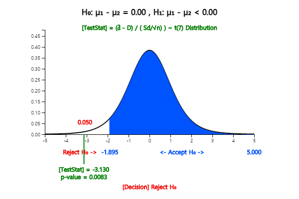
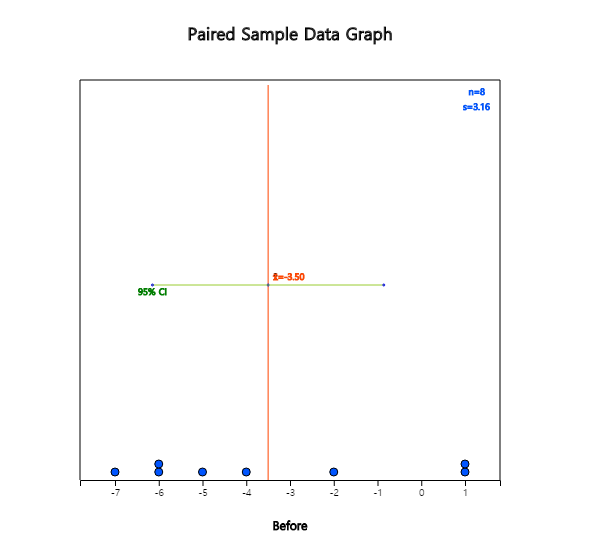
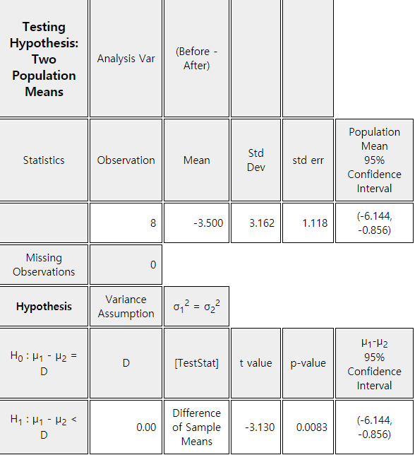

The testing hypothesis for two population means in the previous section is based on two samples
extracted independently from each population. However, in some cases it is difficult to extract
samples independently, or if samples are extracted independently, then the resulting analysis
may be meaningless, because characteristics of each sample differ too much.
For example, you want to give typists a special education to increase the speed of typing
and want to see if this training has been effective in the speed of typing. In this case,
if different samples are extracted before and after education, it is difficult to measure
the effectiveness of education, because individual differences are severe. In order to overcome
the individual difference for a typist who has sampled before training education, if you measure
the typing speed before and after the training for the typist, the effect of special education
can be well understood.
A hypothesis test that uses same samples to perform similar experiments to compare means of
two populations is called a paired comparison. In the paired comparison, we calculate the
difference (\(d_i\)) between paired data \(x_{i1}\) and \(x_{i2}\) as shown in Table 8.1.3
and obtain the mean of differences (\(\overline d\)) and variance of differences (\(s_{d}^2\)).
Mean of \(d_i\) : \(\overline d = \frac{1}{n} \sum d_i \)
Variance of \(d_i\) : \(s_d^2 = \frac{1}{n-1} \sum (d_i - \overline d )^2 \)
When two populations of normal distributions have the same mean, the sample statistic
\(\frac{\overline d}{\frac{s_d}{\sqrt{n}}}\) follows a \(t\)-distribution with the
\(n-1\) degrees of freedom. It allows the testing of the difference between two population
means in case of the paired comparison as follows.
Table 8.1.4 Testing hypothesis of two population means (paired comparison)
- two populations are normal distributions, and paired sample case
If \( \left | \frac{\overline d - D_0}{\frac{s_d}{\sqrt{n}}} \right | > t_{n-1; α/2} \), then reject \( H_0 \), else accept \( H_0 \)
Example 8.1.4
The following is the result of a special training to improve the typing speed of eight typists before
and after the training. Test whether or not the typing speed has increased at the 5% significance level.
Assume that the speed of typing follows a normal distribution. Check the test result using 『eStat』 and 『eStatU』.
id
Typing speed before training (unit: words/min)
Typing speed after training (unit: words/min)
1 2 3 4 5 6 7 8
52 60 63 43 46 56 62 50
58 62 62 48 50 55 68 57
Answer
This problem is for testing the null hypothesis \(\small H_0 : \mu_1 - \mu_2 = 0 \) to the alternative hypothesis
\(\small H_1 : \mu_1 - \mu_2 < 0 \) to compare the typing speed of typists before training (population 1) and
after training (population 2) using paired samples. Therefore, the decision rule is as follows.
$$ \small
\begin{multline}
\shoveleft \text{If } \frac{\overline d - D_0}{\frac{s_d}{\sqrt{n}}} < - t_{n-1; α}, \text{ then reject } H_0 \\
\end{multline}
$$
Calculated differences (\(d_i\)) of paired samples before and after training, the mean (\(\overline d\))
and standard deviation (\(s_d\)) of differences are as follows.
id
Typing speed before training (unit: words/min)
Typing speed after training (unit: words/min)
Difference \(d_i\)
1 2 3 4 5 6 7 8
52 60 63 43 46 56 62 50
58 62 62 48 50 55 68 57
-6 -2 1 -5 -4 1 -6 -7
Mean of \(d_i\) : \(\overline d = -3.5 \)
Standard deviation of \(d_i\) : \(s_d = 3.16 \)
The test statistic is as follows:
$$ \small
\begin{multline}
\shoveleft \frac{\overline d - D_0}{\frac{s_d}{\sqrt{n}}} = \frac{-3.5}{\frac{3.16}{\sqrt{8}}} \\
\shoveleft - t_{n-1; α} = - t_{8-1: 0.05} = - t_{7: 0.05} = -1.8946 \\
\end{multline}
$$
Therefore, \(\small H_0\) is rejected and conclude that the training increased the typing speed.
In 『eStatU』 menu, select ’Testing Hypothesis: \(\mu_1 , \mu_2\)’, select the alternative hypothesis
at [Hypothesis], check the 5% significance level, check ‘paired sample’ at [Test Type],
and enter data of sample 1 and sample 2 of paired samples at [Sample Data] as in <Figure 8.1.11>.
<Figure 8.1.11> Testing hypothesis for two population means using 『eStatU』 - paired sample
Click the [Execute] button to calculate the sample mean and sample standard deviation of differences
(\(\overline d\) and \(s_d^2\) ) and to show the result of the hypothesis test as <Figure 8.1.12>.

<Figure 8.1.12> Result of testing hypothesis for two population means using 『eStatU』 - paired sample
In 『eStat』, the paired data is entered in two columns as shown in <Figure 8.1.13>.
Click the icon for testing two population means and select 'Analysis Var' as V1 and 'by Group'
as V2 to show the dot graph and the confidence interval for differences of paired data as in <Figure 8.1.14>.
Ex ⇨ eBook ⇨ EX080104_TypingSpeedEducation.csv.
<Figure 8.1.13> Data input of paired sample

<Figure 8.1.14> Dot graph of difference data of paired sample
Enter the mean difference \(\small D\) = 0 for the desired test in the options window below the graph,
select the 5% significance level, and press the [t-test] button to display the result of
the hypothesis test for paired samples such as <Figure 8.1.15> and <Figure 8.1.16>.
<Figure 8.1.15> Testing hypothesis for two population means using 『eStat』 - paired sample

<Figure 8.1.16> Result of testing hypothesis for two population means using 『eStat』 - paired sample
Practice 8.1.2
Randomly sampled data of (wife age, husband age) for 8 couples are as follows.